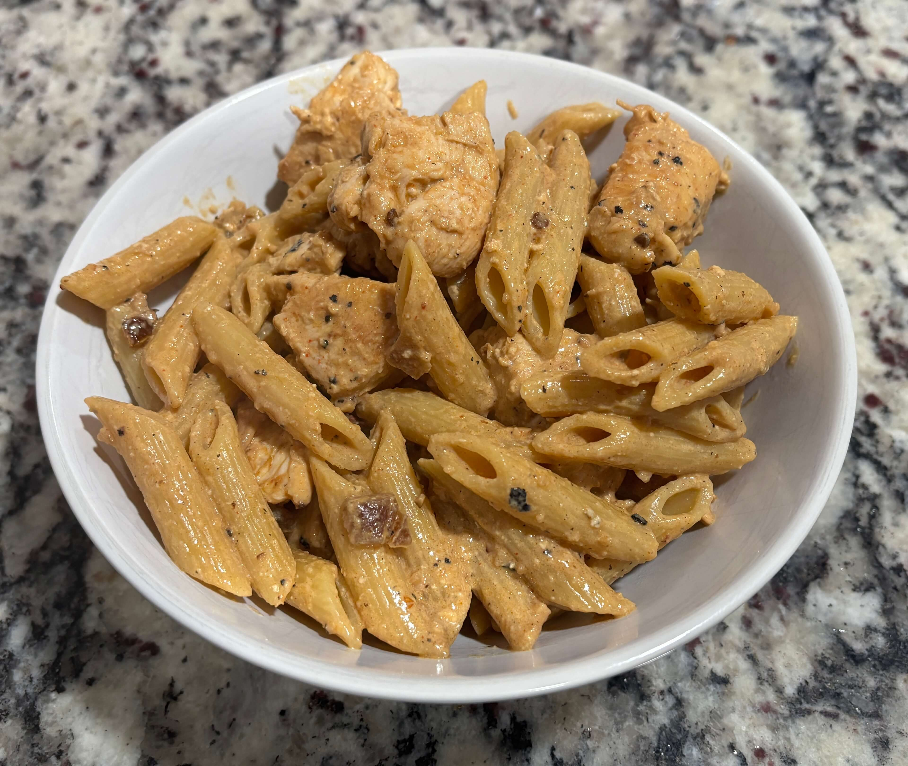

Home
Creamy Spicy Chipotle Chicken Pasta

4 servings
Ingredients
- 1.5 boneless skinless chicken breast cut into 1 inch cubes
- 3 tbsp olive oil divided
- 1/2 tsp salt
- 1/2 tsp black pepper
- 1 tsp paprika divided
- 1/2 tsp garlic powder
- 16 oz penne pasta
- 4 cloves minced garlic
- 4 chipotle peppers in adobo sauce, finely chopped
- 2 tsp adobo sauce (from the can)
- 2 cups low sodium chicken broth (480 ml)
- 1 cup low fat cream cheese (226g)
- 1 cup plain greek yogurt (240g)
- 1/2 cup grated parmesan cheese (50g)
- Fresh cilantro for garnish
Steps
- Cook pasta according to instructions, drain and set aside
- In a bowl, toss the chicken pieces with 1 tbsp olive oil, 1/2 tsp salt, 1/2 tsp black pepper, 1/2 tsp paprika, and 1/2 tsp garlic powder
- Heat a large skillet over medium-high heat, then add the seasoned chicken. Cook for 6-8 minutes until golden brown and fully cooked. Remove from pan and set aside
- In the same skillet, add 2 tbsp olive oil and 4 cloves minced garlic. Saute for 30s until fragrant. Add the chopped chipotle peppers and adobo sauce, stirring for another 30s.
- Pour in the chicken broth and stir to loosen any bits from the pan. Lower the heat and whisk in the cream cheese until smooth and melted. Then stir in the greek yogurt, parmesan and 1/2 tsp paprika until creamy
- Toss the chicken, pasta, and sauce all together until the pasta is fully coated. Adjust seasoning with salt and pepper
- Divide the pasta into 4 servings and sprinkle chopped cilantro on top before serving